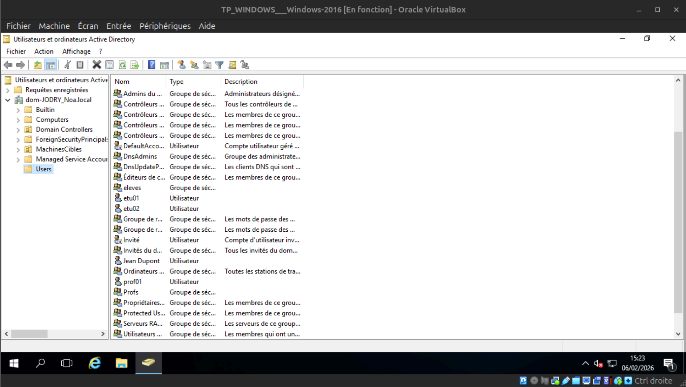
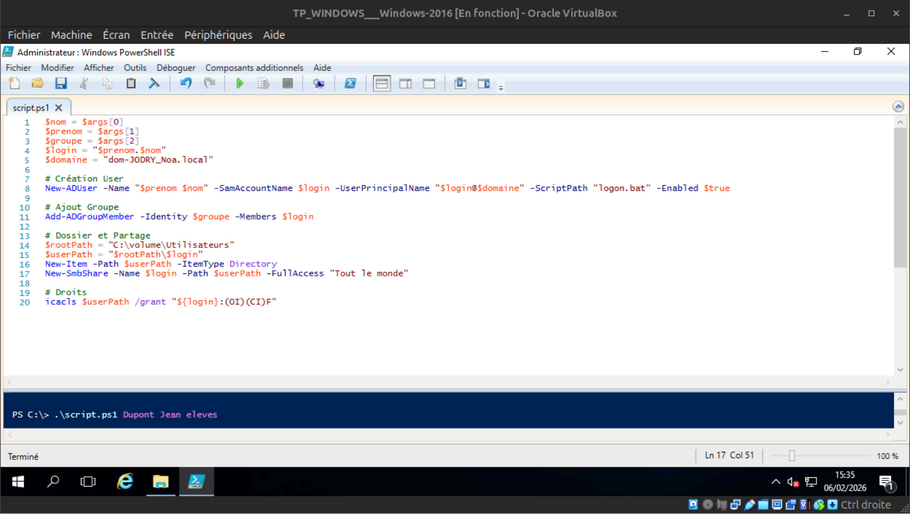
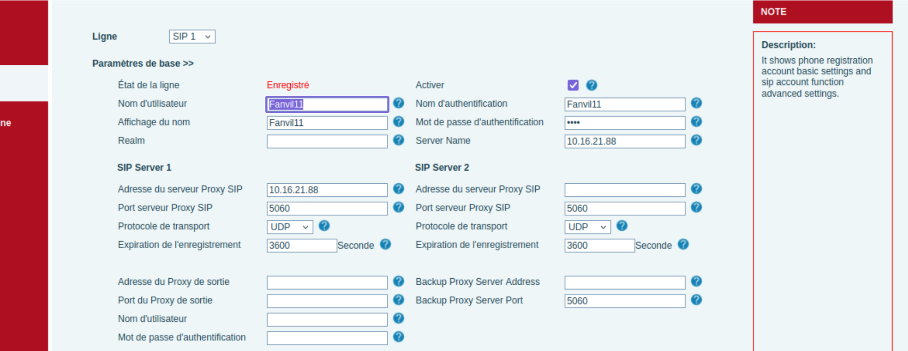
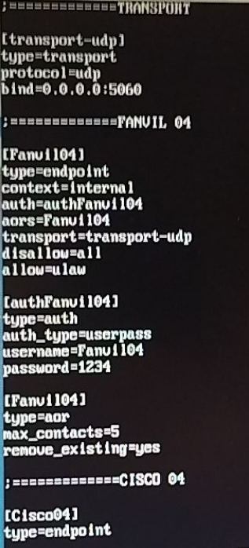
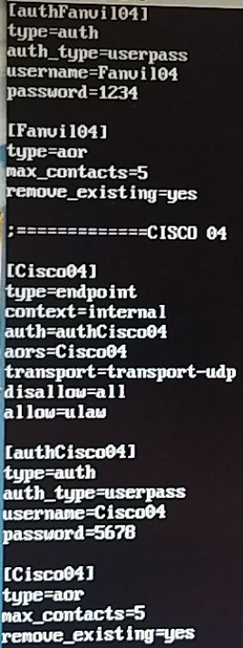

Mes Compétences & AC
Analyse détaillée de mes Apprentissages Critiques selon le référentiel BUT R&T.
Compétence : Administrer les réseaux et l'Internet
Ce que j'ai fait : J'ai réalisé des montages de circuits électriques sur platines d'essais, effectué des mesures avec des multimètres et vérifié les lois de Kirchhoff (mailles et nœuds) ainsi que la loi d'Ohm.
Pourquoi je l'ai fait : C'est indispensable pour comprendre la couche physique des réseaux (couche 1 du modèle OSI) et savoir comment le signal électrique transite dans nos câbles (PoE, signaux binaires).
Comment je l'ai fait : En TP, j'ai câblé des résistances en série et en parallèle, et utilisé des générateurs de tension continue. J'ai ensuite consigné les valeurs théoriques et pratiques dans un tableau.
Mes difficultés : La manipulation des outils de mesure pour éviter les courts-circuits et bien comprendre la différence de branchement (série pour l'ampèremètre, parallèle pour le voltmètre) a demandé un temps d'adaptation.
Ce que j'en ai appris : J'ai validé la théorie par la pratique et compris l'importance de l'atténuation du signal dans un support physique.
Ce que je ferais autrement : Je prendrais le temps de modéliser systématiquement le circuit sur un simulateur (comme LTspice) avant de passer au câblage réel pour anticiper les résultats.
Ce que j'ai fait : J'ai étudié le fonctionnement interne d'un processeur, réalisé des conversions de bases (binaire, hexadécimal) et travaillé sur la logique combinatoire (portes logiques, tables de vérité).
Pourquoi je l'ai fait : Pour comprendre comment une machine (ordinateur ou routeur) traite réellement l'information au niveau matériel et comment les masques sous-réseaux sont calculés mathématiquement.
Comment je l'ai fait : Par des exercices d'algèbre de Boole, des simplifications de tableaux de Karnaugh, et l'utilisation de simulateurs logiques (Logisim) pour recréer des additionneurs binaires.
Mes difficultés : L'abstraction mathématique de l'algèbre de Boole et la méthode de Karnaugh pour simplifier les équations complexes m'ont demandé beaucoup de concentration.
Ce que j'en ai appris : J'ai une vision claire de la façon dont le code est traduit en impulsions électriques, ce qui m'aide énormément pour comprendre l'adressage IPv4 et IPv6.
Ce que je ferais autrement : J'utiliserais des outils de visualisation en ligne plus souvent pour m'entraîner à la conversion binaire de tête de manière plus ludique.
Ce que j'ai fait : J'ai configuré des commutateurs et routeurs Cisco. J'ai mis en place des VLANs, configuré le routage inter-VLAN (Router-on-a-Stick), et défini des routes statiques.
Pourquoi je l'ai fait : Pour segmenter un réseau d'entreprise, isoler les différents services (RH, Production, Serveurs) et assurer la communication entre eux de manière contrôlée.
Comment je l'ai fait : J'ai d'abord simulé la topologie sur Cisco Packet Tracer, puis j'ai implémenté les commandes CLI (IOS Cisco) sur du matériel physique en baie de brassage via un câble console.
Mes difficultés : Mémoriser l'arborescence des modes de commandes Cisco (mode utilisateur, privilégié, configuration globale) et diagnostiquer les erreurs de configuration sur les ports Trunk.
Ce que j'en ai appris : Je maîtrise la logique d'acheminement des trames MAC (couche 2) et des paquets IP (couche 3), et l'importance cruciale de la documentation réseau.
Ce que je ferais autrement : Je prendrais l'habitude de sauvegarder mes configurations (`copy run start`) beaucoup plus régulièrement lors de mes TP sur matériel réel pour éviter les pertes de données.
Ce que j'ai fait : J'ai conçu et déployé une infrastructure centralisée sous Windows Server 2016. J'ai créé un domaine Active Directory, organisé des OU (Élèves/Profs), géré des partages NTFS et automatisé la création des comptes avec un script PowerShell.
Pourquoi je l'ai fait : Pour centraliser l'authentification des utilisateurs, sécuriser les données via le principe du "Moindre Privilège", et automatiser des tâches d'administration lourdes.
Comment je l'ai fait : En utilisant l'interface Utilisateurs et ordinateurs Active Directory et les GPO. Pour les permissions, j'ai configuré les partages en "Contrôle total" et géré les restrictions via NTFS. J'ai scripté avec les cmdlets New-ADUser et icacls.
Mes difficultés : Comprendre que la permission effective est la plus restrictive entre celle du partage réseau et celle du système de fichiers NTFS. La syntaxe PowerShell m'a également demandé beaucoup de rigueur.
Ce que j'en ai appris : La différence fondamentale entre permissions réseau et locales. J'ai pris conscience de l'importance de l'automatisation pour l'industrialisation d'un SI.
Ce que je ferais autrement : Mon script PowerShell pourrait être amélioré pour lire directement les données d'un fichier .csv fourni par les RH, afin d'importer toute une promotion d'un seul coup.
📸 Traces ciblées :
Organisation des groupes AD

Script d'automatisation PowerShell

Ce que j'ai fait : J'ai utilisé l'analyseur de trames Wireshark pour capturer du trafic et identifier l'origine de pannes réseau (boucles de routage, requêtes DHCP sans réponse).
Pourquoi je l'ai fait : Le "troubleshooting" (dépannage) est le cœur du métier R&T. Il faut savoir isoler un problème plutôt que de deviner son origine.
Comment je l'ai fait : En appliquant une méthode "Bottom-Up" (de la couche physique 1 à la couche applicative 7). Utilisation des commandes ping, tracert / traceroute, et des filtres Wireshark (ex: ip.addr == ...).
Mes difficultés : Lire et interpréter les paquets directement dans leurs formats bruts (hexadécimal) et comprendre la structure des entêtes (TCP, IP).
Ce que j'en ai appris : Les commandes de diagnostic de base sont très puissantes. J'ai appris à ne jamais paniquer face à une panne et à procéder par élimination.
Ce que je ferais autrement : Rédiger des fiches d'incidents plus détaillées ("tickets") lors des TP pour documenter la panne, ses causes, et la solution apportée, comme on le fait en entreprise.
Ce que j'ai fait : J'ai installé des systèmes d'exploitation clients (Windows 10, Ubuntu Linux) sur des machines physiques et des machines virtuelles (VirtualBox, VMware). J'ai configuré leurs paramètres réseaux.
Pourquoi je l'ai fait : Pour fournir un environnement de travail fonctionnel à un utilisateur final et le connecter au réseau local de l'entreprise.
Comment je l'ai fait : Création de clés USB bootables avec l'outil Rufus, gestion des séquences de boot dans le BIOS/UEFI, partitionnement des disques, et jonction aux domaines Active Directory.
Mes difficultés : Comprendre les différents types de partitionnement (MBR vs GPT) et les problèmes de pilotes (drivers) de cartes réseau post-installation.
Ce que j'en ai appris : L'importance de la phase de post-installation (mises à jour de sécurité, configuration des pare-feux locaux, installation d'antivirus).
Ce que je ferais autrement : Je m'intéresserais davantage aux outils de déploiement d'images réseau (comme WDS ou FOG) pour ne plus avoir à faire ces installations manuellement poste par poste.
Compétence : Connecter les entreprises et les usagers
Ce que j'ai fait : J'ai généré des signaux électriques (carrés, sinusoïdaux) et je les ai mesurés à l'aide d'oscilloscopes numériques pour en analyser le comportement dans le temps et en fréquence.
Pourquoi je l'ai fait : L'information transmise sur les réseaux (comme l'ADSL ou la fibre) repose sur des variations de signaux. Comprendre ces phénomènes permet de diagnostiquer les erreurs de transmission (bruit, atténuation).
Comment je l'ai fait : Utilisation de générateurs de basses fréquences (GBF), réglage des bases de temps et des déclencheurs (triggers) sur l'oscilloscope, et calculs de périodes, fréquences, et amplitudes.
Mes difficultés : La stabilisation d'un signal complexe à l'écran à l'aide de la fonction trigger, et le calcul mental rapide pour passer des divisions de l'écran aux valeurs réelles.
Ce que j'en ai appris : Un signal théorique carré n'est jamais parfait en réalité (temps de montée, de descente, dépassement), ce qui impacte la vitesse maximale de transmission des données (débit binaire).
Ce que je ferais autrement : J'utiliserais les fonctionnalités d'export USB de l'oscilloscope pour intégrer de vraies courbes dans mes comptes rendus de TP au lieu de les dessiner schématiquement.
Ce que j'ai fait : Dans le cadre de la SAE 1.03, j'ai modélisé mathématiquement et numériquement une ligne de transmission en cuivre (câble coaxial, paires torsadées) à l'aide du logiciel LTspice.
Pourquoi je l'ai fait : Pour anticiper la dégradation du signal selon la longueur du câble, sans avoir besoin de dérouler physiquement des kilomètres de cuivre.
Comment je l'ai fait : En modélisant des tronçons de ligne par des composants élémentaires (Résistances, Inductances, Condensateurs = schéma RLC série/parallèle), puis en lançant des simulations temporelles et fréquentielles (diagrammes de Bode).
Mes difficultés : La prise en main de l'interface de LTspice, un peu austère, et la corrélation entre les équations mathématiques théoriques vues en cours et les résultats de la simulation.
Ce que j'en ai appris : J'ai visuellement compris pourquoi la longueur d'un câble Ethernet RJ45 est limitée à environ 100 mètres avant de subir une atténuation trop sévère nécessitant un répéteur.
Ce que je ferais autrement : Je prendrais le temps d'explorer l'outil MATLAB/Simulink en parallèle pour obtenir des graphiques plus esthétiques pour mes rapports de projet.
Ce que j'ai fait : J'ai réalisé du câblage réseau physique (fabrication de cordons RJ45 droits et croisés) et testé la connectivité de la baie de brassage jusqu'aux prises murales.
Pourquoi je l'ai fait : Le câblage est la base de toute infrastructure. Un mauvais sertissage peut causer des erreurs intermittentes extrêmement complexes à détecter au niveau logique (pertes de paquets, chute de débit).
Comment je l'ai fait : À l'aide de pinces à sertir, de pinces à dénuder et de câbles UTP/STP. J'ai respecté scrupuleusement la norme de câblage T568B, puis testé mes câbles avec un testeur de continuité.
Mes difficultés : Maintenir les 8 petits fils de cuivre alignés dans le bon ordre de couleur lors de l'insertion dans l'embout RJ45 avant de serrer avec la pince.
Ce que j'en ai appris : La rigueur manuelle est aussi importante que la logique informatique. J'ai également compris le rôle du blindage (feuille d'aluminium) contre les interférences électromagnétiques (EMI).
Ce que je ferais autrement : J'aimerais m'entraîner davantage sur les supports optiques (fibre) et utiliser une soudeuse à fibre optique, car c'est le standard de demain.
Ce que j'ai fait : J'ai déployé un serveur IPBX sous Asterisk (Linux Alpine), configuré des postes Fanvil (interface web) et des téléphones Cisco via auto-provisioning (serveur TFTP). J'ai paramétré le Dialplan (messagerie, serveur vocal interactif).
Pourquoi je l'ai fait : Pour mettre en place une infrastructure de communication permettant aux collaborateurs de s'appeler, tout en garantissant l'interopérabilité entre différents constructeurs via le protocole SIP.
Comment je l'ai fait : Dans Asterisk, manipulation des fichiers pjsip.conf (endpoints, auth) et extensions.conf (le Dialplan). Pour les Cisco, installation d'un service in.tftpd et création de fichiers XML (ex: SEP).
Mes difficultés : La syntaxe stricte d'Asterisk. Des soucis d'enregistrement SIP (erreurs de bind ou d'identifiants). L'auto-provisioning Cisco exigeait que le nom du fichier XML contienne la bonne adresse MAC sans aucune erreur.
Ce que j'en ai appris : Le fonctionnement du SIP (port UDP 5060) pour l'établissement des sessions. J'ai saisi l'avantage de l'auto-provisioning en milieu professionnel (déploiement de masse) face à la configuration manuelle.
Ce que je ferais autrement : Plutôt que de copier manuellement les fichiers XML, je développerais un script Python prenant en entrée un fichier CSV (MAC et extensions) pour générer automatiquement tous les fichiers de configuration.
📸 Traces ciblées :
Dialplan extensions.conf

Enregistrement pjsip.conf

Configuration pjsip

Ce que j'ai fait : J'ai rédigé des rapports techniques pour chaque projet (SAE) et j'ai soutenu mes travaux à l'oral devant un jury d'enseignants. J'ai aussi rédigé des mails professionnels simulés.
Pourquoi je l'ai fait : Un technicien réseau ne fait pas que coder ou câbler. Il doit expliquer ses choix à sa hiérarchie, former des utilisateurs, et convaincre des clients. La communication est essentielle.
Comment je l'ai fait : J'ai structuré mes comptes rendus (Introduction, Méthodologie, Résultats, Conclusion) et conçu des diaporamas épurés. À l'oral, j'ai travaillé mon débit de parole et ma posture.
Mes difficultés : Vulgariser des concepts très techniques (comme le routage inter-VLAN) pour un auditoire qui ne serait pas forcément expert en informatique.
Ce que j'en ai appris : Un bon schéma vaut parfois mieux qu'un long discours. J'ai appris à adapter mon vocabulaire technique selon mon interlocuteur (directeur financier vs ingénieur réseau).
Ce que je ferais autrement : Je m'enregistrerais en vidéo lors de mes répétitions pour repérer mes tics de langage et améliorer la fluidité de mes présentations.
Compétence : Créer des outils et applications informatiques
Ce que j'ai fait : J'ai administré des systèmes Linux (Debian/Ubuntu) exclusivement en ligne de commande (CLI). J'ai géré l'arborescence des fichiers, les permissions (chmod, chown) et les utilisateurs système.
Pourquoi je l'ai fait : La majorité des serveurs et équipements réseaux (y compris Cisco, pare-feux, serveurs web) fonctionnent sur des bases Linux/Unix sans interface graphique. La maîtrise du shell est obligatoire.
Comment je l'ai fait : Connexion en SSH via PuTTY ou le terminal. Utilisation intensive des commandes Bash (ls, grep, awk, tar, nano, vim) et gestion des paquets avec apt.
Mes difficultés : Retenir les très nombreux paramètres et options des commandes (comme les drapeaux de la commande tar -xzvf) et s'habituer à l'éditeur vim.
Ce que j'en ai appris : L'interface en ligne de commande est infiniment plus rapide et puissante qu'une interface graphique une fois qu'on la maîtrise. J'ai aussi appris à lire la documentation via la commande man.
Ce que je ferais autrement : Créer un fichier "pense-bête" (cheat sheet) personnalisé dès les premiers cours pour centraliser les commandes utiles au lieu de les chercher à chaque fois sur Internet.
Ce que j'ai fait : J'ai reçu des codes Python contenant des erreurs (syntaxe ou logique). Mon travail a consisté à comprendre l'intention du codeur original, trouver les bugs ("débogage") et appliquer des correctifs.
Pourquoi je l'ai fait : En entreprise, on crée rarement un projet de zéro (from scratch). On passe l'essentiel de son temps à maintenir, lire et améliorer le code des autres collaborateurs.
Comment je l'ai fait : J'ai utilisé l'outil de débogage intégré à mon IDE (Visual Studio Code). J'ai placé des points d'arrêt (breakpoints) et j'ai exécuté le code pas à pas pour suivre l'évolution des variables.
Mes difficultés : Comprendre la logique d'un code qui n'est pas commenté, et repérer les erreurs de type (ex: additionner une chaîne de caractères avec un entier, typique en Python).
Ce que j'en ai appris : J'ai appris à ne plus avoir peur des grands messages d'erreurs (tracebacks) dans la console : ils indiquent précisément la ligne et la nature du problème.
Ce que je ferais autrement : J'utiliserais des outils d'analyse statique de code (linters comme Pylint ou Flake8) pour détecter les erreurs de syntaxe automatiquement avant même l'exécution.
Ce que j'ai fait : J'ai conçu des algorithmes (comme des algorithmes de recherche ou de tri) sous forme de pseudo-code sur papier, que j'ai ensuite traduits en langage Python.
Pourquoi je l'ai fait : Il est crucial de séparer la logique de résolution du problème mathématique de la contrainte syntaxique du langage informatique.
Comment je l'ai fait : J'ai structuré ma pensée en utilisant des logigrammes, puis j'ai déclaré des fonctions Python avec leurs boucles (`for`, `while`) et leurs conditions (`if`, `elif`).
Mes difficultés : Gérer correctement les conditions d'arrêt des boucles while (éviter les boucles infinies) et manipuler proprement les index dans les listes imbriquées.
Ce que j'en ai appris : Le temps passé à réfléchir avec un stylo et du papier fait gagner énormément de temps de codage et évite de recommencer son programme à zéro.
Ce que je ferais autrement : Implémenter le "Test Driven Development" (TDD) : écrire les tests qui vérifient mon algorithme avant même d'écrire la fonction elle-même.
Ce que j'ai fait : J'ai conçu et développé de A à Z ce portfolio numérique personnel. J'ai créé les pages, structuré le contenu et géré le design pour différents écrans.
Pourquoi je l'ai fait : Pour acquérir les fondamentaux du développement Front-End, comprendre le fonctionnement des requêtes HTTP du point de vue client, et me mettre en valeur numériquement.
Comment je l'ai fait : En utilisant les langages balisés HTML5 pour la structure et CSS3 pour le style. J'ai intégré le framework Bootstrap 5 pour faciliter la responsivité (affichage mobile). J'ai ensuite hébergé le site sur GitHub Pages.
Mes difficultés : L'alignement des éléments via CSS (modèle des boîtes, Flexbox), et la gestion du comportement des menus sur les petits écrans (smartphones).
Ce que j'en ai appris : J'ai compris la différence entre la structure sémantique (HTML) et la présentation visuelle (CSS), ainsi que le principe fondamental du "Mobile First".
Ce que je ferais autrement : J'introduirais plus de JavaScript dynamique pour créer des interactions plus poussées, ou j'explorerais un préprocesseur CSS comme SASS pour mieux organiser mes styles.
Ce que j'ai fait : Lors de la SAE 1.05, j'ai développé un script modulaire en Python lisant un fichier Open Data (clubs-data-2023.csv), traitant ces données via dictionnaires/listes, et générant des graphiques ASCII en terminal. Le projet a été géré en équipe via GitLab.
Pourquoi je l'ai fait : Pour automatiser le traitement massif d'informations (Data) et pour m'initier au travail en équipe professionnalisant via des outils de versioning de code.
Comment je l'ai fait : Découpage modulaire : un main.py qui orchestre, appelant make_chart.py et create_ascii_chart.py. Sur le plan collaboratif, nous avons utilisé les commandes git commit, push, pull et géré les conflits sur GitLab.
Mes difficultés : Parser correctement le CSV (gestion des guillemets, encodage UTF-8). Côté collaboratif : les fusions de branches (merge conflicts) quand deux étudiants modifiaient la même ligne de code.
Ce que j'en ai appris : L'importance cruciale d'un code propre, commenté et séparé en modules. J'ai aussi appris que Git est une bouée de sauvetage indispensable en développement collaboratif.
Ce que je ferais autrement : Au lieu de coder le traitement du CSV à la main, j'utiliserais à l'avenir la bibliothèque Pandas de Python. Pour Git, j'imposerais une norme de nommage stricte ("Conventional Commits") pour nos commits d'équipe.